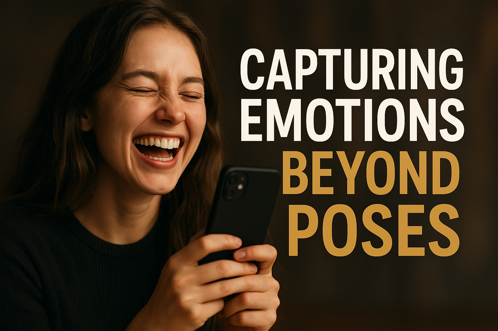

The Art of Capturing Emotions: Photography and Videography Beyond Poses

In today’s world, where everyone has access to cameras on their phones, photography and videography have become everyday activities. Yet, there’s one thing that separates good visuals from unforgettable ones: emotions.
While most people focus on perfect poses, expensive gear, and flawless settings, the true magic of photography and videography lies in capturing the *raw emotions* of the moment. These are the smiles that weren’t planned, the tears that weren’t rehearsed, and the laughter that wasn’t staged. They are the heartbeats that make a picture or video timeless.
Why Emotions Matter More Than Poses
A perfectly posed picture may look great on the surface, but often it feels stiff and empty. Real emotions, however, tell a story. They breathe life into visuals and connect with people in a way that no technical perfection ever could.
Think about it: the last picture or video that stayed with you wasn’t flawless because of its angles or lighting, it was unforgettable because it made you feel something. That’s the power of capturing emotions beyond poses.
The Difference Between a Picture and a Story
Photography and videography aren’t just about freezing time or recording moments. They are about storytelling. A flat, posed shot says: “We were here.” But an emotional capture says: “This is how it felt to be here.”
When you focus on expressions, gestures, and unguarded moments, your visuals tell a story. They don’t just display people; they reveal personalities. They don’t just capture an event; they preserve the atmosphere.
As a creative, whether behind a phone camera or a professional one, your goal should be to tell stories, not just take pictures.
Practical Tips for Capturing Real Emotions
So how do you go beyond stiff poses and start creating visuals that breathe with life? Here are some practical tips:
- Create a Comfortable Atmosphere
People reveal their truest selves when they feel safe and relaxed. Whether you’re photographing a friend, a client, or even a stranger, make the environment comfortable. Talk to them, crack jokes, and let them know it’s okay to be themselves. -
Focus on Candid Moments
Some of the best shots come when people don’t know the camera is watching. Capture in-between moments — when someone is laughing, thinking, adjusting their outfit, or even daydreaming. Those candid shots are often the most authentic. -
Watch for Micro-Expressions
Emotions live in the details: the slight curve of a smile, the raised eyebrow, the look in someone’s eyes. Train yourself to notice these small but powerful cues. They often tell more than a big staged grin ever could. -
Use Movement to Your Advantage
Stiffness kills emotion. Encourage movement — walking, turning, dancing, or even playing. Videography especially thrives on motion. A simple shot of someone fixing their hair or running toward a friend can carry huge emotional weight. -
Connect With Your Subject
The deeper your connection with the person in front of your lens, the more likely you are to capture their real emotions. Don’t just be a photographer or videographer — be a listener, an observer, and sometimes, a friend.
Photography + Videography: Different Tools, Same Goal
Photography captures single moments, while videography captures sequences of moments. But both aim for the same thing: to move people emotionally.
As a photographer, your challenge is to freeze emotions in a single frame. As a videographer, your challenge is to let those emotions unfold in motion. Together, they create a powerful storytelling duo.
For example, a photograph may capture the tear running down a bride’s cheek, while a video captures the trembling of her voice as she says “I do.” Both are priceless, both are powerful.
Why Gear Doesn’t Define Emotion
A lot of beginners think they need the latest camera or the most expensive gear to create meaningful work. That’s a myth. Emotions don’t need a high-resolution lens to be felt. A simple mobile phone, when used with a creative eye, can capture a tear, a laugh, or a hug just as powerfully as a professional camera.
What matters isn’t the gear but the vision of the storyteller. The heart behind the lens always matters more than the lens itself.
Why Gear Doesn’t Define Emotion
A lot of beginners think they need the latest camera or the most expensive gear to create meaningful work. That’s a myth. Emotions don’t need a high-resolution lens to be felt. A simple mobile phone, when used with a creative eye, can capture a tear, a laugh, or a hug just as powerfully as a professional camera.
What matters isn’t the gear but the vision of the storyteller. The heart behind the lens always matters more than the lens itself.
Editing: The Final Layer of Emotion
Capturing emotions doesn’t end when you press the shutter or stop recording. Editing is where you amplify the mood.
- In photography, play with colors, contrast, and tones that highlight the emotion you want to express.
- In videography, use pacing, background music, and transitions that deepen the emotional connection.
Editing isn’t about making things artificial — it’s about highlighting the truth that was already there.
Final Thoughts: Beyond the Pose
The art of photography and videography is not about creating perfect images; it’s about creating *meaningful* ones. When you move beyond the idea of capturing stiff poses and instead focus on capturing emotions, your work becomes timeless.
The next time you’re behind your phone or camera, remember: it’s not just about how it looks — it’s about how it feels.
Because at the end of the day, people may forget the background, the outfit, or even the lighting. But they will never forget how your picture or video made them feel.
> 🔁 Did this resonate with you? Share with someone who loves photography or videography.
> 📸 Ready to tell better stories? Start with your next shot — look for emotions, not poses.